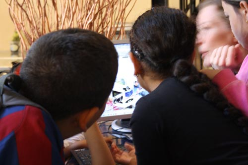
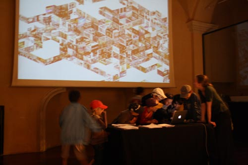
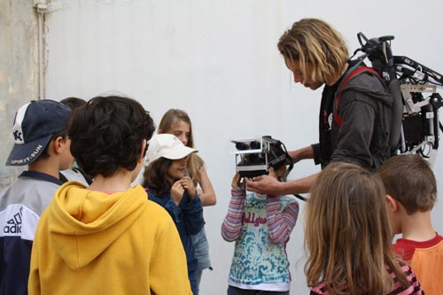
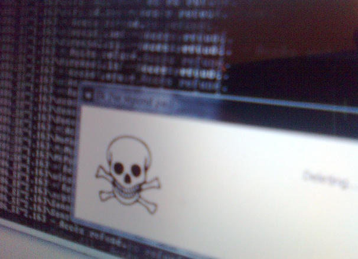
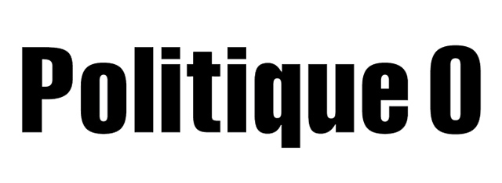
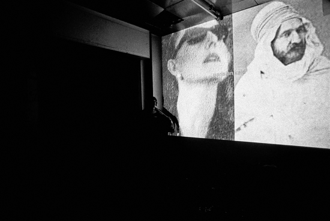

|
| Désert Numérique 5 |
http://desertnumerique.net/2014
Festival Désert Numérique #5
juillet 2014
Saint-Nazaire-le-Désert, Drôme
co-organisé avec Karen Dermineur et Michèle Lision

crédits photo: Daniel Munk
Stitch'n glitch, concert de machines à coudre de Cécile Babiole, avec: CarlY, Quentin Aurat, Monique Blache, Marie-Hélène Rodot, Ãmilie Pouzet, 2014.
Cette cinquième édition de Désert Numérique explorait la notation - ce temps suspendu entre une idée et sa réalisation - sous toutes ses formes : la recette de cuisine, la partition, le programme informatique, l'algorithme, le dessin, le schéma, le diagramme logique, la carte et le tracé d'un parcours, le patron de couture, le modèle, le mode d'emploi, la liste, la règle du jeu, le scénario, le plan...
Toute forme d'écriture qui fixe, pré-délimite, détermine, mémorise, diffère, diffracte, découpe, répartit, et construit ce rapport très occidental au monde et à la technique.
|
| Désert Numérique 4 |
http://desertnumerique.net/2013
Festival Désert Numérique#4
juillet 2013
Saint-Nazaire-le-Désert, Drôme
co-organisé avec Karen Dermineur et Michèle Lision

crédits photo: xmx
Sieste musicale, Concert de Fabrice Jünger / James Giroudon, 2013
Focus sur l'audiovisuel et ses modes de transmission. Retour sur la télévision, internet: sur les formes sociales qu'ils génèrent, et leurs incidences sur nos états de conscience.
|
| Désert Numérique 3 |
http://desertnumerique.net/2012
Festival Désert Numérique#3
juillet 2012
Saint-Nazaire-le-Désert, Drôme
co-organisé avec Karen, Bernard Dermineur et Michèle Lision

crédits photo: xmx
Atelier Hye(r)Olds, 2012
Au moment où l'on passe au tout-numérique dans ce territoire de montagne qui n'a été que très tardivement relié aux réseaux, la troisième édition de Désert Numérique visitait l'histoire de la culture numérique. Du cinéma et de la vidéo aux bandes magnétiques, de l'appropriation des canaux de transmission, des radios amateur aux pratiques de détournement, du collectif à l'intrusif, autant de postures qui habitent le numérique, autant de clés de lecture à réactiver.
|
| ADM8 @ ZKM |
Antidatamining/
ADM8, réalisation collective de RYBN

suivre son activité : http://rybn.org/ANTI/ADM8/
interview : http://www02.zkm.de/videocast/index.php/component/content/article/115/446-rybn.html
site de Antidatamining : http://www.antidatamining.net/
à propos du robot:â http://rybn.free.fr/ANTI/BOT.html
Exposition The Global Contemporary. Art Worlds After 1989
au ZKM, Karlsruhe
du 17 sept 2011 au 5 fev 2012
http://www.global-contemporary.de/
|
| Désert Numérique 2 |
http://desertnumerique.net
Festival Désert Numérique#2
juillet 2011
Saint-Nazaire-le-Désert, Drôme
co-organisé avec Karen, Bernard Dermineur et Michèle Lision

crédits photo: emmanuel guez
concert Yann Leguay, Alice Dubief, et des enfants de l'école du village, 2011
|
| Lesoir.be @ speedshow bruxelles |
Version belge du Monde.fr réalisé pour le Speedshow de Bruxelles organisé par Anne Roquigny et Yves Bernard à iMAL en septembre 2011 http://speedshow.net/speedshow-brussels/

|
| Webcartoon au Hublot |
Sur l'invitation de Xavier Dubourdieu du Hublot,
ateliers pour enfants, le 26 avril 2011 Ã Nice, avec Adelin Schweitzer
http://atelierwebcartoon.free.fr/



|
| SPEED SHOW vol.5 @Open Internet' |

The SPEED SHOW series is coming to Paris! It'll be awesome! We will rock the place and on top we'll kill the night with a F.A.T. lab after party at Le dune! Spread the news! Bring all your friends! Book your flight today!
Organisé par Aram Bartholl, Marie Lechner & Anne Roquigny
http://fffff.at/exposition-express-numero-5-internet-libre/
http://fffff.at/speed-show-5/
http://vimeo.com/18957356
avec Le Monde.fr
|
| 0k |

http://rybn.org/0k/
http://www.youtube.com/user/d34thK#p/u/0/1OWEmgccUpY
0k
RYBN, clé USB, 2010
MAC OS X version (10.4, .5 & .6 intel compatible)
Windows 7, XP & Vista
"Plug the USBkey
Launch 0k program
Follow the instructions given in the dialog box.
Enjoy!"
0k est une commande du CNAP, pour la collection POPUP
commissaire: Pascale Cassagnau.
|
| POLITIQUE 0 |
Politique Zéro est organisé par Upgrade! Paris, les éditions MF et RYBN.ORG/
du vendredi 1er octobre au dimanche 3 octobre 2010
à l'Espace Niemeyer, au siège du Parti Communiste, 2 Place du Colonel Fabien, Paris.
Entrée Libre.

Horaires :
Vendredi 18h - minuit
Samedi 10h - minuit
Dimanche 10h - 20h
/ Intervenants
Conférences / performances de Franco Bifo Berardi, Luc Boltanski, Roland Cayrol, Yves Citton, Ivana Dragsic, Dominic Gagnon, Sophie Gosselin et David gé Bartoli, Jodi, Katharina Klotz, I-Wei Li et Pierre Bongiovanni, Matteo Lucchetti, Jean-Marc Manach, Anne Morelli, Antoni Muntadas et Marshall Reese, Fédéric Neyrat, Béatrice Rettig, Timothée Nay et Omnes Efflam, Julie Sedel, Société Réaliste, Samon Takahashi, Tzuchien Tho, UBERMORGEN, Olivier Voirol, Paul Willemsen, Wunderlitzer. Stream sur selfworld.net chambre #44.
Installations / vidéos / atelier / documentation de Benoît Durandin et Alexandre Xanthakis, Dominic Gagnon, Harun Farocki et Andrei Ujica, Jodi, Jorge Luis Marzo et Arturo "Fitoâ" RodrÃÂguez, Ricardo Mbarkho, Antoni Muntadas et Marshall Reese, Société Réaliste, Le Dispositif (Pacôme Thiellement et Thomas Bertay), Samon Takahashi, UBERMORGEN / sélection Argos: Charley Case, Tzu Nyen Ho, Gert Verhoeven; sélection Rencontres Internationales Paris/Berlin/Madrid.
/ Organisateurs
Les Ãâ°ditions mf
http://www.editions-mf.com/
RYbN
http://rybn.org
Upgrade! Paris (Marika Dermineur - Incident.net)
http://incident.net/theupgrade/

Politique 0 est le 2ème hors-série Upgrade! Paris, après Economie zéro - 2008, qui s'est déroulé à la Ménagerie de Verre, à Ars Longa (Paris 11e) et en réseau, du vendredi 15 février à 20h au dimanche 17 février à 20h, pendant 48h sans interruption.
Cette série d'événements ne se rapporte pas au modèle émetteur-récepteur d'une (dé)monstration et diffusion auprès d'un public. Il s'agit d'un processus aux implications multiples, un ensemble d'espaces qui cohabitent et se parasitent, et où différents acteurs de la scène artistique, de la recherche, des sciences etc, se rencontrent. Conçu comme une plateforme de réflexion et d'échange, cet espace critique modulaire et chaotique accepte et alimente ses contradictions.
|
| What Are You ? @ Gapfest, 3-5 septembre 2010, AZ Koeln |

Gapfest 2010 - 3.-5.9 AZ Koeln
Invitation de Annie Buenker
http://gapfest.wordpress.com/programm/




photos: Therese
|
| Désert Numérique 2010 |
Désert Numérique
arts numériques, électronique, électroacoustique, fabriques, musique, pique-nique
à Saint-Nazaire-le-Désert, Drôme, 500m alt., 122 hab.
avec:
Art of Failure
ArtKillArt
Pierre Bongiovanni + Le Chiendent: Sandrine Bonnet, Gaël Guyon, Mathieu Sanchez, Ydir Acef et Maria Victoria Simon
Igor Bravo
chdh
Georges Chich
Luc Dall'Armellina
Marie-Christine Driesen et Horia Cosmin Samoïla
Gilles Elie-dit-Cosaque
Vincent Epplay
Sébastien Fantini
Sébastien Fau
Nicolas Frespech
Patrice Jeneer
Incident.net
KRN
Sylvain Le Beux
Yann Leguay
Michèle Lision
Jacques Perconte
William Pawelzik
RYbN
Antoine Schmitt
Upgrade!
Victor Vina
l'ERBA-Valence
Romain Barbier
Cyril Behncke
Romain Bonnefond
Albane De Joinville
Maxime Foisseau
Marie Frignet
Julia Frumy
Cécile Galicher
Jeanne Gangloff
Adeline Givelet
Audrey Sovignet
Camille Szklorz
Géraldine Letovanec
Carole Renaud
Noeel Sauret
festival du 22 au 25 juillet 2010
http://desert.numerique.free.fr/blog/

|
| <- Articles prcdents
|